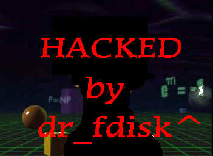

HACKED, OWNED & CRACKED

CONSEJO NACION DE NO SE KE!
QUEREMOS TARIFA PLANA!!!!!! el dia viernes haremos un paro que consistira en no llamar en todo el dia viernes a internet!
ESTE ES MI MANIFIESTO:
El futuro ha estallado en el presente.
Las megacorporaciones abren nuevos gobiernos.
Y hombres generados por computadoras abren
nuevas fronteras.
Ahora decimos: "Toda informacion debe ser libre".
No lo es.
La informacion es el poder y el dinero del mundo virtual.
Entonces, desconfia de la autoridad.
La cybercultura esta entrando en la sociedad y es la unica
union entre el cyber-mundo y los sistemas abiertos.
Bienvenidos a la cyber-corporacion.
SALUDOS ESPECIALES:
alt3kxH3z,GeXuS, Dacure, Yo_Soy, ACidGum,AcidB0nd, sejo, Nahual,nauj,Che_loko, Winner,devil-c, Ip_Master, IORIO,X-Dawn,Raw, Elruso,nahual,Extraterr,, WreacK, spider^,ALMAFUERTE,satmex,psiconauta, _Alone_, titan,Rita,Yield,cervon, KuKulKan,hck,hack.ar, Koman3,etc....
teAmS: Raza-Mexicana,Acids' Team, MosKos,Root Entry,RaReGaZz,Dilemma,imby X-SPLOIT,RESisTaNce,etc..